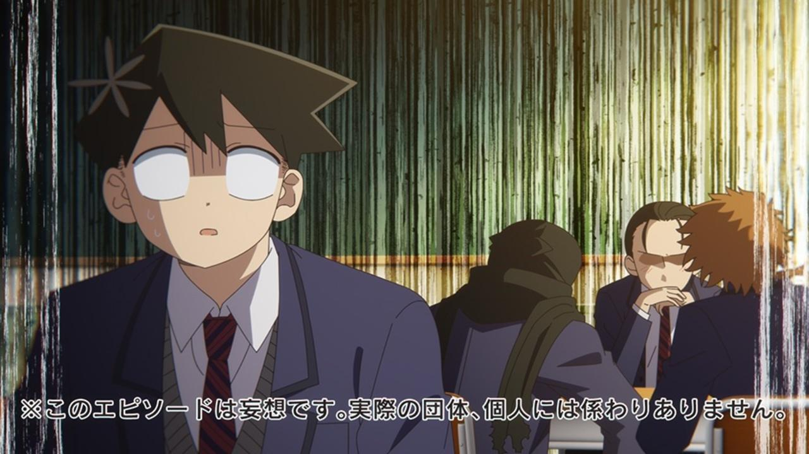
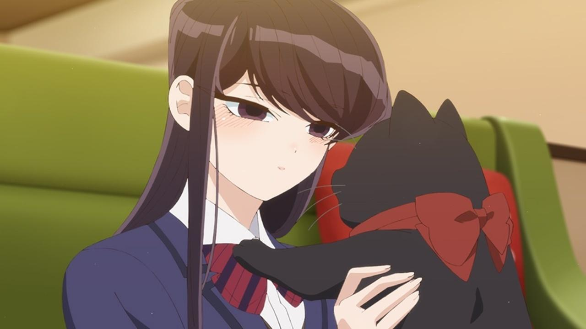
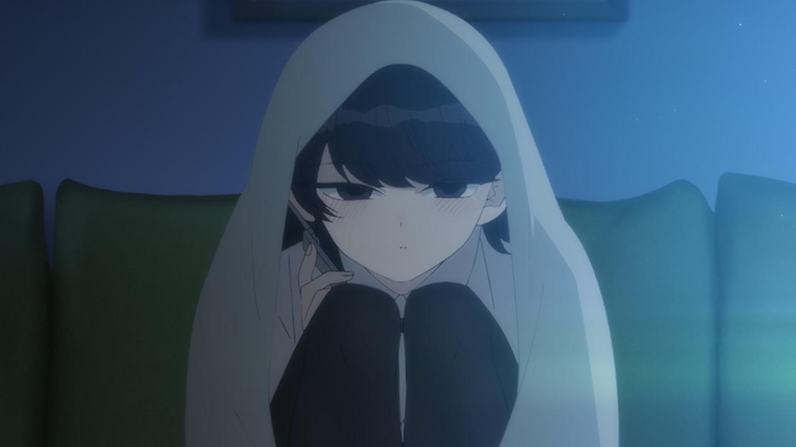

Reseña | Komi-san Can’t Communicate 2 – Capítulo 2
Komi-san Can’t Communicate 2 – Capítulo 2: Tifón / Ilusiones / En un ‘Café de gatos’ / El juego de “te amo”
Aunque ya estaba lista para ir a la escuela, Komi es frenada por un tifón, por lo que deberá quedarse en casa. Esperando a que pase el tiempo, Komi observa la lluvia hasta que un relámpago provoca un apagón en su zona, asustándola. Sin embargo, recibe una llamada de Tadano para preguntarle cómo estaba, hablando juntos por un rato más. Por la tarde, ya sin tifón, todos están en la escuela, y Yamai idea un plan para ver la ropa interior de Komi, intentando usar un charco, no obstante, su plan falla.
En el salón de clases, los chicos Chiarai Shigeo, Shinobino Mono y Sonoda Taisei se ponen a imaginar cómo sería salir con algunas de las chicas del salón, todo mientras Tadano los escucha. Pasando por Najimi, Agari, Yamai, Nakanaka, Inaka, Makeru, y Komi, sin embargo, no logran imaginar una situación similar a las anteriores con Komi, a excepción de Tadano.
Luego de ver una reportaje en las noticia, Komi quiere ir a un ‘Café de gatos‘, por lo que invita a Tadano y Najimi, pero Najimi la rechaza debido a su alergia a los gatos, mientras que Tadano también lo hace para que Komi pueda interactuar con sus demás amigos. Por lo que Komi termina yendo al ‘Café de Gatos‘ con Onemine y Otori. Mientras Otori está rodeada de gatos y Onemine conseguía la atención de alguno, Komi era evitada, hasta que se acercó a ella Chocola, la jefa (gato) del ‘Café de gatos‘ luego de haberla vigilado por un rato.
Después de clases, Yamai y Komi está jugando al juego de “Te amo“, en el que uno le tiene que decir ‘te amo‘ al otro y pierde quien reaccione a ello. Aunque Yamai lo dice naturalmente, Komi no reacciona. A la hora de cambiar de turnos, Yamai pierde antes de que Komi pueda hacer algo. Al juego se une Najimi, pero Komi continúa sin reaccionar, así que mete a su carta del triunfo, Tadano. Pero es interrumpido a mitad de la frase luego de reaccionar el mismo, perdiendo.
El avance de Komi-san
SApenas es Komi-san Can’t Communicate 2 – Capítulo 2, pero Komi ya habló bastante en la serie. Demostrando que su personaje sí que ha tenido un desarrollo durante la primera temporada. Si bien fue mediante una llamada por teléfono, hay que recalcar que fue ella quien quiso que la llamada continuara. Esto no me pareció que fuera por lo asustada que estaba en ese momento, sino porque realmente estaba ansiosa de ver a sus amigos en la escuela.
Eso solo en la primera parte del episodio. Si bien no tuvo una participación activa en el siguiente arco, con las ilusiones de los chicos. Debo aceptar que su situación imaginaria con Tadano como si fueran recién casado fue bastante tierna. Sin embargo, mi favorita fue la de Nakanaka.
En el ‘Café de gatos‘, me pareció bastante caballeroso de Tadano rechazar la invitación de Komi para que esta fuera con otros de sus amigos. Aunque, al igual que él, yo también me hubiera arrepentido de no haber ido luego de ver la foto. En este arco, pese a que Komi no terminó de invitar a Onemine antes de que aceptara, sí tomó la iniciativa mucho más fácilmente que en episodios anteriores. Además, logró conseguir un nuevo amigo, después de todo, nadie dijo que tenían que ser humanos. Y personalmente sí la cuento dentro de la “lista” debido a que Komi no es dueña de Chocola.
El último arco, con el juego de “Te amo“, me pareció ser el que más impacto tuvo sobre los personajes protagonistas. Después de todo, estuvo repleto de indicios sobre una relación más “profunda” con Tadano. Además de que, por supuesto, Komi estaba activamente jugando con Yamai.
En general, Komi demostró en Komi-san Can’t Communicate 2 – Capítulo 2 que ya es capaz de ser quien intente mantener/alargar una conversación, y ser quien dé el primer paso para invitar a alguien más sin depender tanto de Tadano (claro que a un amigo ya conocido). Sobre sus sentimientos encontrados sobre escuchar el “Te amo” de Tadano en el juego o ser salvada de ello, me pareció algo interesante de ver para su desarrollo, pero para un futuro aún lejano.
Detalles técnicos del capítulo
La principal cosa que quiero tratar en este apartado son el opening y ending. Aunque, como ya hablé anteriormente del ending, solo me limitaré a confirmar que es mi favorito de la temporada de Primavera 2022, tanto en animación como en la canción. Simplemente me pareció maravilloso. No lo puedo saltar, omitir o dejar el episodio sin haberlo visto completo en cada episodio.
Por su parte, el opening de Komi-san Can’t Communicate 2 me parece bastante bueno. Me encantó que al inicio la animación sea en una perspectiva de primera persona como si fueras Komi. Con una excelente calidad, y algunos momentos que me hicieron recordar al opening de la primer temporada. Puede que sea de mis favoritos esta temporada, sin embargo, prefiero mil veces el de la primera temporada.
Ahora bien, tocando rápidamente la calidad de animación general de Komi-san Can’t Communicate 2 – Capítulo 2, considero que tuvo una ligera mejora a comparación del capítulo anterior. Principalmente en el arco del tifón, cuando Yamai intenta ver la ropa interior de Komi. Para mí, toda esa parte fue la que mejor animada estuvo. No fue perfecta, pero sí siento que se adaptó correctamente a lo que mostraría. Escena que, por cierto, me recordó a una similar en “Karakai Jouzu no Takagi-san“: «¡Sopla más fuerte, viento!». Creí que Yamai diría la misma frase. Algo que yo mismo haría en esa situación, como si fuera capaz de crear/controlar el viento.